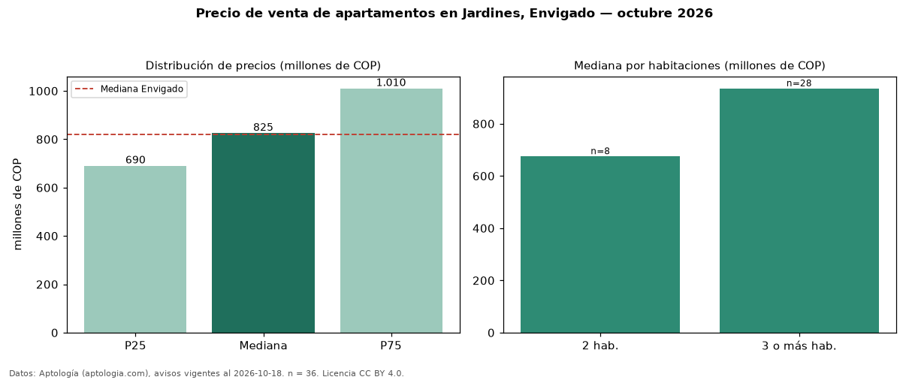

Precio de venta de apartamentos en Jardines, Envigado — octubre 2026
En Jardines, Envigado, la mediana de precio de venta de apartamentos es COP 825 millones, según 36 avisos vigentes. Prácticamente coincide con la mediana de Envigado para apartamentos (COP 820 millones). Por metro cuadrado, la mediana es COP 7,71 millones/m² (n = 36 avisos con área), 9 % por debajo de Envigado (COP 8,45 millones/m²). Con el precio por m² de arriendo del mismo segmento (COP 47.778/m² al mes), la rentabilidad bruta implícita es 7,4 % anual (aproximación con medianas de ofertas distintas). El área mediana anunciada es 110 m². El segmento con más oferta es el de 3 o más habitaciones (28 avisos, mediana COP 935 millones); pasar de 2 habitaciones a 3 o más habitaciones cambia la mediana +39 %. La administración mediana declarada es COP 561.000 al mes (n = 23). Por precio mediano es el puesto 18 de 37 barrios de Envigado con al menos 30 avisos de apartamentos en venta (COP): en la franja media. Datos: Aptología (aptologia.com), CC BY 4.0 — https://www.aptologia.com/venta/envigado/jardines. Archivos: PDF, CSV con las cifras y gráfica PNG.

| Avisos únicos | 36 |
|---|---|
| Percentil 25 | COP 690.000.000 |
| Mediana | COP 825.000.000 |
| Percentil 75 | COP 1.010.000.000 |
| Mediana por m² | COP 7.712.434 |
Fuente: avisos vigentes de portales inmobiliarios recopilados por Aptología, deduplicados (mínimo 30 avisos únicos por celda). Precios pedidos, no cerrados. Fecha: 2026-10-18.